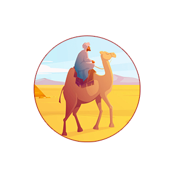

- 
Petuah Abu Hazim, Salamah bin Dinar Rahimahullah
Bapak Ilmu Nahwu, Abul Aswad ad-Duali
Muhammad bin Sirin, Tabi’in Yang Utama
7 Ulama Besar Kota Madinah
Kisah Pengangkatan Umar bin Abdul Aziz Menjadi Khalifah
Nasihat al-Hasan al-Bashri Kepada Umar bin Abdul Aziz
Kisah Syuraih al-Qadhi Bersama Istrinya
Orang yang Tidak Takut dengan Kematian
Sifat Wara Imam Abu Hanifah
Kisah Hikmah: Ambisi Umar bin Abdul Aziz “Hari Esok Lebih Baik dari Hari Ini”
Kisah Tabi’in: Abdurrahman al-Ghafiqi, Gubernur Andalusia
Imam Abu Hanifah An-Nu’man, Bukti Akan Kepandaian dan Kecerdasan
Tabi’in: Ahnaf bin Qais, Berguru Kepada Umar al-Faruq
Kisah Tokoh Islam – Ahnaf bin Qais, Pemimpin Bani Tamim
Tabi’in: Rufai bin Mihran, Abu al-Aliyah
Pahlawan Islam – Abdurrahman al-Ghafiqi, Pahlawan Perang di Balath Syuhada
Tokoh Tabi’in – Salim bin Abdullah bin Umar bin Khaththab
Salim bin Abdullah bin Umar bin Khathab, Cucu Umar
Tokoh Islam: Abu Muslim al-Khaulani, Abdullah bin Tsuwab
Tabi’in: Zainul Abidin Ali bin Husein bin Ali bin Abi Thalib
Tabi’in: Al-Qasim bin Muhammad bin Abu Bakar ash-Shiddiq
Tabi’in Thawus bin Kaisan Penasihat yang Lurus
Tabi’in: Thawus bin Kaisan
Tokoh Tabi’in: Muhammad al-Hanafiyyah bin Ali bin Abi Thalib
Tokoh Tabi’in: Umar bin Abdul Aziz
Tokoh Tabi’in: Muhammad bin Waasi’ (Abid Bashrah dan Hiasan Para Ahli Fikih)
Tokoh Tabi’in: Muhammad bin Waasi’ al-Azdi, Guru Orang-Orang Zuhud di Zamannya
Tokoh Tabi’in: Sa’id bin Jubair
Tokoh Tabi’in: Said bin Musayyab
Tokoh Tabi’in Salamah bin Dinar (Abu Hazim al-A’raj)
Kisah Tokoh Tabi’in: Amir bin Syurahbil asy-Sya’bi
Tokoh Tabi’in: Raja’ bin Haiwah
Tokoh Tabi’in – Ar-Rabi’ah ar-Rayi (Bag. 1)
Tokoh Tabi’in – Ar-Rabi’ah ar-Rayi (Bag. 2)
Tokoh Tabi’in Muhammad bin Sirin
Tokoh Tabi’in Syuraih al-Qadhi Hakim yang Bijak
Kisah Tabi’in: Hasan al-Bashri
Iyas bin Mu’awiyah al-Muzanni Tabi’in Cerdas dan Jenius Dimasanya
Tokoh Tabi’in: Ar-Rabi bin Khutsaim
Umar bin Abdul Aziz dan Putranya Abdul Malik
Amir bin Abdillah at-Tamimi
Kepahlawanan Al-Barra’ bin Malik dalam Perang Melawan Musailamah sang Nabi Palsu
Mencari Cermin yang Pudar (bag. 1)
Mencari Cermin yang Pudar (bag. 2- Selesai)
Thawus bin Kaisan, Tabi’in Senior dari Yaman
Hasan al-Bashri Radhiallahu ‘Anhu
Imam Az-Zuhri, Ahli Hadits yang Penuh Semangat
Biografi Umar bin Abdul Aziz (Bagian 1)
Umar bin Abdul Aziz (Bagian 2)
Umar bin Abdul Aziz (Bagian 3)
Biografi Atha bin Abi Raba (Bagian 1)
Biografi Atha bin Abi Raba (Bagian 2)
Ibunda Urwah bin Zubair (Bagian 1)
Ibunda Urwah bin Zubair (Bagian 2)
Ibunda Urwah bin Zubair (Bagian 3 – Selesai)
Najasyi (Ashhamah bin Jabar)
Najasyi (Ashhamah bin Jabar) – Selesai
Dan Khalifah pun Terhina
Menikah dengan Mahar Dua Dirham
Abu Muslim Al-Khaulani, Doanya Tidak Pernah Ditolak
Doa Mustajab Abu Muslim
Kaki yang Tidak Bermaksiat Haruskah Dipotong?
Di Saat Uwais Al-Qarni ‘Tak Sengaja Tertidur